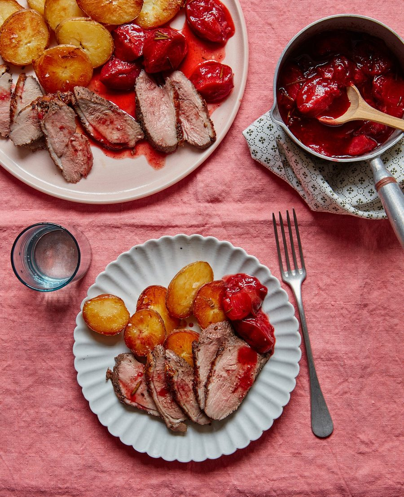

Five-spice duck with roast plums and crisp potatoes

I like to use the oven to cook all three elements of this dish, but you can make a more traditional plum sauce with ginger and garlic on the stove, if you prefer. This will make more spice mix than you need here: store the excess in a sealed jam jar and use on roast potatoes, as a rub in tacos or in stir-fries.
For the plum sauce
Score the duck skin in a crisscross pattern. Toast the spices in a dry frying pan until aromatic, then grind to a fairly fine powder in a mortar or spice grinder. Rub two teaspoons of the five-spice powder and a teaspoon of salt all over the duck, then marinate in the fridge for a few hours, or overnight.
About 90 minutes before you want to eat, heat the oven to 200C (180C fan)/390F/gas 6. Steam the potatoes whole for 12 minutes, then cut into 1-2cm coins. Put the duck or goose fat in a baking tray in the oven and, once it’s smoking hot, add the potato slices, scatter over a teaspoon of sea salt and roast for 60-75 minutes, basting three or four times while they cook, until golden. Forty minutes into the cooking time, pour off the excess fat and scatter over half the rosemary, if using; at the same time, take the duck out of the fridge to come up to room temperature.
Line a baking sheet with foil and lay the plums cut side up on top. Sprinkle with the sugar and a teaspoon of five-spice mix, then pour on the vinegar and soy sauce. Scatter over the remaining rosemary, then roast alongside the potatoes for 35-40 minutes, until caramelised and jammy.
About 20 minutes before you want to eat, put a frying pan on a medium-high heat. Add a teaspoon of the duck fat, then lay in the breasts skin side down and leave to fry for three or four minutes, until the skin is golden and crisp. Flip the breasts over, sear on the flesh side for just a minute, then transfer to an oven dish and put in the oven and turn it off. The residual heat should cook it through in four to five minutes.
Remove and rest the duck while you tip the plums and their juices to a jug or bowl; taste and, if need be, adjust the seasoning with more soy or sugar. Cut the duck into wafer-thin slices and serve with the potatoes and plums.